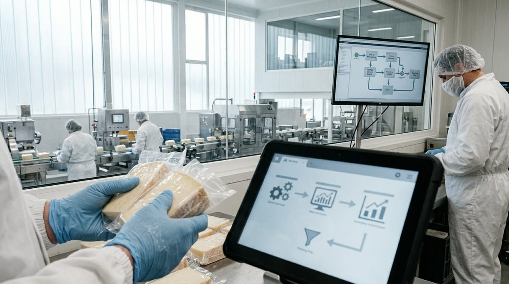

RPA y automatización en un software de calidad

RPA y automatización en un software de calidad
La automatización de procesos con RPA en calidad alimentaria ha pasado de ser una tendencia tecnológica a convertirse en una necesidad real para los departamentos de calidad que gestionan volúmenes crecientes de datos, registros e incidencias. Cuando los equipos dedican horas a copiar información de un sistema a otro, a rellenar formularios manualmente o a enviar correos de seguimiento, la automatización deja de ser un lujo y se convierte en la palanca que libera tiempo para lo que verdaderamente importa: analizar, decidir y mejorar.
En este artículo te explicamos qué es la automatización de procesos en el contexto de la calidad agroalimentaria, cómo se diferencia de otras soluciones tecnológicas como las integraciones API o los ERP, y qué casos de uso concretos puedes poner en marcha hoy mismo con herramientas como Power Automate, Zapier o Make.
Qué es la automatización de procesos (RPA) y en qué se diferencia de una integración API o ERP
RPA son las siglas de Robotic Process Automation, es decir, automatización robótica de procesos. En términos prácticos, un robot RPA imita las acciones que haría un usuario humano sobre una aplicación: hace clic, lee campos, copia datos y los introduce en otro sistema. No necesita que las aplicaciones estén conectadas entre sí a nivel técnico; el robot actúa sobre la interfaz, igual que lo haría una persona.
Una integración API, en cambio, conecta dos sistemas directamente a nivel de datos, sin pasar por la pantalla. Es más robusta, más rápida y más fiable, pero requiere que ambas plataformas tengan una API disponible y, habitualmente, desarrollo técnico para configurarla. Puedes profundizar en este enfoque en el artículo sobre integraciones por API en un software de calidad.
Un ERP, por su parte, no es una herramienta de automatización en sí mismo, sino un sistema de gestión centralizado que unifica distintos módulos (compras, producción, finanzas…). La automatización y la integración API son mecanismos para conectar el ERP con otras herramientas especializadas, como un software de calidad. Si quieres entender mejor esa relación, te recomendamos leer sobre por qué el software de calidad y el ERP se complementan.
En resumen: RPA es útil cuando no existe API disponible o cuando el esfuerzo de desarrollo no está justificado. La integración API es preferible cuando buscas solidez y escalabilidad. Y el ERP es el ecosistema sobre el que, a menudo, todo lo anterior orbita.
Automatización de procesos con RPA en calidad alimentaria: casos típicos con Power Automate, Zapier o Make
Los responsables de calidad en empresas agroalimentarias gestionan a diario una cantidad notable de información: registros de temperatura, incidencias de proveedor, resultados de análisis microbiológicos, no conformidades, auditorías internas… Gran parte de esa información nace en el software de calidad, pero necesita llegar al ERP, al equipo de producción o al responsable de compras. Aquí es donde herramientas como Power Automate, Zapier o Make marcan la diferencia.
Sincronización de incidencias entre el software de calidad y el ERP. Cada vez que se registra una no conformidad en el software de calidad, un flujo automatizado puede crear automáticamente una tarea o alerta en el ERP vinculada al lote afectado, sin que nadie tenga que volver a introducir los datos. Esto reduce errores y garantiza que producción y logística estén informados en tiempo real.
Envío automático de alertas y notificaciones. Cuando un registro de control crítico supera un límite establecido, el sistema puede disparar un correo electrónico o un mensaje en Teams o Slack al responsable del área, sin intervención manual. Esta capacidad de respuesta inmediata es fundamental en entornos donde el tiempo de reacción puede marcar la diferencia entre una desviación controlada y un problema mayor.
Generación automática de informes periódicos. Con Make o Power Automate, es posible programar la extracción de datos del software de calidad y el envío automático de un informe semanal o mensual a dirección, sin que el técnico de calidad tenga que prepararlo manualmente cada vez.
Actualización de registros de proveedores. Cuando un proveedor envía documentación actualizada (certificados, análisis de producto), un flujo automatizado puede registrar la recepción, actualizar el expediente en el software de calidad y notificar al técnico responsable.
Estas automatizaciones no requieren programadores. Zapier, Make y Power Automate ofrecen interfaces visuales de arrastrar y soltar que permiten a un perfil técnico medio configurar flujos funcionales en pocas horas.
Qué debe poder hacer un software de calidad para conectarse sin desarrollo a medida
No todos los software de calidad del mercado están preparados para integrarse con herramientas de automatización. Antes de elegir una solución, conviene verificar que cumple con una serie de requisitos técnicos mínimos que garanticen la conectividad sin necesidad de proyectos de desarrollo costosos.
API REST documentada y accesible. Es el requisito fundamental. Una API REST bien documentada permite que herramientas como Make o Zapier se conecten al software de calidad mediante conectores estándar o webhooks, sin necesidad de escribir código personalizado.
Webhooks nativos. Los webhooks permiten que el software envíe una notificación automática a otro sistema en el momento en que ocurre un evento (una nueva incidencia, un registro fuera de rango, una auditoría cerrada). Sin esta funcionalidad, la automatización debe basarse en consultas periódicas, lo que introduce latencia e ineficiencia.
Compatibilidad con los conectores de las principales plataformas. Zapier, Make y Power Automate tienen catálogos de conectores preconfigurados. Si el software de calidad tiene un conector oficial en alguna de estas plataformas, la configuración de flujos es mucho más sencilla y accesible para perfiles no técnicos.
Exportación de datos en formatos estándar. CSV, JSON o XML son formatos que facilitan el intercambio de información con otros sistemas, especialmente en entornos donde la integración API no es posible y se recurre a RPA clásico.
Gestión de permisos y tokens de acceso. La seguridad es innegociable. El software debe permitir crear credenciales de acceso específicas para las integraciones, con permisos granulares, de modo que un fallo en una automatización no comprometa la integridad de todos los datos.
Riesgos y límites: qué automatizar y qué no
La automatización es una herramienta poderosa, pero aplicarla sin criterio puede generar problemas serios en un entorno tan regulado como la industria agroalimentaria. Tal y como establece el Reglamento (CE) n.º 178/2002 sobre legislación alimentaria general (Reglamento [CE] 178/2002, 2002), los operadores alimentarios son responsables de garantizar la trazabilidad y la seguridad de los alimentos en todas las etapas de la cadena. Delegar decisiones críticas en un flujo automatizado sin supervisión humana puede comprometer esa responsabilidad.
Qué sí tiene sentido automatizar: la sincronización de datos entre sistemas, las notificaciones y alertas, la generación de informes, el archivado de documentación y los recordatorios de tareas periódicas. Son procesos repetitivos, basados en reglas claras, donde el error humano es frecuente y el valor añadido de la intervención humana es bajo.
Qué no debe automatizarse sin supervisión humana: la toma de decisiones sobre la aceptación o el rechazo de lotes, la gestión de crisis alimentarias, la valoración de no conformidades críticas o cualquier acción que tenga consecuencias legales o de seguridad alimentaria. En estos casos, la automatización puede apoyar (recopilando información, alertando, preparando borradores), pero la decisión final debe recaer en una persona cualificada.
Otro riesgo habitual es la automatización frágil: flujos que funcionan perfectamente hasta que cambia un campo en el ERP, se actualiza el software de calidad o falla la conexión. Todo flujo automatizado debe documentarse, revisarse periódicamente y contar con alertas de error que notifiquen al equipo cuando algo no funciona como se espera.
En definitiva, la automatización bien diseñada transforma el trabajo del departamento de calidad: elimina tareas mecánicas, reduce errores de transcripción y acelera la respuesta ante desviaciones. Pero su éxito depende de elegir el software de calidad adecuado, conectar las herramientas correctas y mantener siempre el criterio humano donde más importa.
Referencias
- Reglamento (CE) n.o 178/2002 del Parlamento Europeo y del Consejo, de 28 de enero de 2002, por el que se establecen los principios y los requisitos generales de la legislacion alimentaria. (2002). https://eur-lex.europa.eu/eli/reg/2002/178/oj?locale=es